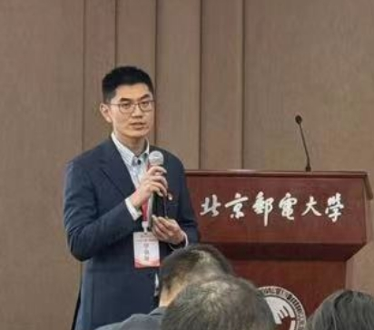

Kongming Liang (梁孔明)
Associate Professor
School of Artificial Intelligence
Beijing Post and Telecommunications University
Email: liangkongming [at] bupt.edu.cn
Google Scholar |
Github |
Dr. Kongming Liang is an Associate Professor at the School of Artificial Intelligence, Beijing Post and Telecommunications University. He received the Bachelor's degree from China University of Mining & Technology, Beijing, China, in 2012; and the Ph.D. degree from Institute of Computing Technology, Chinese Academy of Sciences, Beijing, China, in 2018. He was a joint Ph.D. Student of machine learning group in Carleton University from Sep 2016 to Oct 2017 and a postdoc researcher in the Department of Computer Science at Peking University from Jan 2019 to Dec 2020. Currently, he is an associate professor of Beijing University of Posts and Telecommunications. His research interests cover computer vision and machine learning, especially visual attribute learning, visual relationship detection, and medical image analysis.
梁孔明博士，北京邮电大学副研究员，博士生导师。2018年6月获得中国科学院计算技术研究所计算机应用方向博士学位，2019年至2021年于北京大学进行博士后阶段研究工作，2016-2017年在加拿大卡尔顿大学进行联合培养，主要研究方向为计算机视觉、深度学习和医学影像分析。以第一作者或通讯作者发表国际会议期刊论文40余篇，其中包含国际顶级人工智能、计算机视觉与医学影像分析期刊会议TPAMI、TMI、CVPR、ICCV、ECCV、AAAI、IJCAI、MM、MICCAI等。共申请专利20余项，其中授权8项（第一发明人6项）。主持国家自然科学青年科学基金项目一项，作为子课题负责人参与国家重点研发计划，作为算法负责人参与国家自然科学基金联合基金重点支持项目和北京市自然科学基金重点项目等课题研发。入选2022年度北京市科协青年托举人才工程，获得2022年度MICCAI ISLES国际竞赛冠军、2023年度IEEE IC-NIDC国际会议最佳论文、2023年度中国智能技术与大数据会议优秀论文，2023年度中国图象图形学学会技术发明奖一等奖。
Research interests
- Computer vision: visual attribute learning, visual relationship detection
- Medical Image Analysis: lesion segmentation, bias mitigation
Professional services
- Reviewer: TPAMI, TMM, Transactions on Cognitive and Developmental Systems, PR, Neurocomputing, CVPR, ICCV, ECCV, PRCV, ICASSP, 北邮学报, 智能科学与技术学报, etc.
Publications
2024
- Disentangling Before Composing: Learning Invariant Disentangled Features for Compositional Zero-Shot Learning
Tian Zhang, Kongming Liang*, Ruoyi Du, Wei Chen, Zhanyu Ma
IEEE Transactions on Pattern Analysis and Machine Intelligence, 2024
- Understanding Episode Hardness in Few-Shot Learning
Yurong Guo, Ruoyi Du, Aneeshan Sain, Kongming Liang*, Yuan Dong, Yi-Zhe Song, Zhanyu Ma
IEEE Transactions on Pattern Analysis and Machine Intelligence, 2024
- Animal-Bench: Benchmarking Multimodal Video Models for Animal-centric Video Understanding
Yinuo Jing, Ruxu Zhang, Kongming Liang*, Yongxiang Li, Zhongjiang He, Zhanyu Ma, Jun Guo
NeurIPS, 2024
- Learning Conditional Prompt for Compositional Zero-Shot Learning
Tian Zhang, Kongming Liang*, Ke Zhang, Zhanyu Ma
ICME, 2024
- SLNL: Soft Label Regularization for Semi-Supervised Facial Expression Recognition with Negative Label Learning
Youwei Zhang, Jing Jiang, Yuying Zhao, Kongming Liang*
IEEE International Conference on Image Processing (ICIP), 2024
- Hierarchical Prompting for Diffusion Classifiers
Wenxin Ning, Dongliang Chang, Yujun Tong, Zhongjiang He, Kongming Liang, Zhanyu Ma
ACCV, 2024
- Class-Aware Contrastive Learning for Fine-Grained Skeleton-Based Action Recognition
Xinyu Bian, Dongliang Chang, Yuqi Yang, Zhongjiang He, Kongming Liang, Zhanyu Ma
ACCV, 2024
- Polyp-E: Benchmarking the Robustness of Deep Segmentation Models via Polyp Editing
Runpu Wei, Zijin Yin, Kongming Liang*, Min Min, Chengwei Pan, Gang Yu, Haonan Huang, Yan Liu, Zhanyu Ma
BIBM, 2024
- Mixture-of-Hand-Experts: Repainting the Deformed Hand Images Generated by Diffusion Models
Yuxuan Wang, Tianwei Cao, Kongming Liang, Zhongjiang He, Hao Sun, Yongxiang Li, Zhanyu Ma
Chinese Conference on Pattern Recognition and Computer Vision (PRCV), 2024
- Evaluating Attribute Comprehension in Large Vision-Language Models
Haiwen Zhang, Zixi Yang, Yuanzhi Liu, Xinran Wang, Zheqi He, Kongming Liang*, Zhanyu Ma
Chinese Conference on Pattern Recognition and Computer Vision (PRCV), 2024
- Efficient Face Super-Resolution via Wavelet-based Feature Enhancement Network
Wenjie Li, Heng Guo, Xuannan Liu, Kongming Liang, Jiani Hu, Zhanyu Ma, Jun Guo
ACM MM, 2024
- Benchmarking Segmentation Models with Mask-Preserved Attribute Editing
Zijin Yin, Kongming Liang*, Bing Li, Zhanyu Ma, Jun Guo
CVPR, 2024
- Dual-Prior Augmented Decoding Network for Long Tail Distribution in HOI Detection
Jiayi Gao, Kongming Liang*, Tao Wei, Wei Chen, Zhanyu Ma, Jun Guo
Proceedings of the AAAI Conference on Artificial Intelligence (AAAI), 2024
2023
- Attribute learning with knowledge enhanced partial annotations
Kongming Liang, Xinran Wang, Tao Wei, Wei Chen, Zhanyu Ma, Jun Guo
2023 IEEE International Conference on Image Processing (ICIP), 2023
- Self-Enhanced Training Framework for Referring Expression Grounding
Yitao Chen, Ruoyi Du, Kongming Liang, Zhanyu Ma
2023 IEEE International Conference on Image Processing (ICIP), 2023
- Semi-Supervised Learning for FGVC with Out-of-Category Data
Ruoyi Du, Dongliang Chang, Zhanyu Ma, Kongming Liang, Yi-Zhe Song, Jun Guo
IEEE Transactions on Pattern Analysis and Machine Intelligence, 2023
- Learning Dynamic Prototypes for Visual Pattern Debiasing
Kongming Liang, Zijin Yin, Min Min, Yan Liu, Zhanyu Ma, Jun Guo
International Journal of Computer Vision, 2023
- Plugging Stylized Controls in Open-Stylized Image Captioning
Jie Wang, Yixiao Zheng, Ruoyi Du, Yiming Zhang, Kongming Liang, Zhanyu Ma
Chinese Conference on Pattern Recognition and Computer Vision (PRCV), 2023
- Focus the Overlapping Problem on Few-Shot Object Detection via Multiple Predictions
Mandan Guan, Wenqing Yu, Yurong Guo, Keyan Huang, Jiaxun Zhang, Kongming Liang, Zhanyu Ma
Chinese Conference on Pattern Recognition and Computer Vision (PRCV), 2023
- Image Generation Based Intra-class Variance Smoothing for Fine-Grained Visual Classification
Zihan Yan, Ruoyi Du, Kongming Liang, Tao Wei, Wei Chen, Zhanyu Ma
Chinese Conference on Pattern Recognition and Computer Vision (PRCV), 2023
- Category-Specific Prompts for Animal Action Recognition with Pretrained Vision-Language Models
Jing Yinuo, Chunyu Wang, Ruxu Zhang, Kongming Liang, Zhanyu Ma
ACM MM, 2023
- Hierarchical Visual Atribute Learning in the Wild
Kongming Liang, Xinran Wang, Haiwen Zhang, Zhanyu Ma, Jun Guo
ACM MM, 2023
- Difference of mean Hounsfield units (dHU) between follow-up and initial noncontrast CT scan predicts 90-day poor outcome in spontaneous supratentorial acute intracerebral hemorrhage with deep convolutional neural networks
Xiaona Xia, Xiaoqian Zhang, Jiufa Cui, Qingjun Jiang, Shuai Guan, Kongming Liang, Hao Wang, Chao Wang, Chencui Huang, Hao Dong
NeuroImage: Clinical, 2023
- Multi-Head Uncertainty Inference for Adversarial Attack Detection
Yuqi Yang, Songyun Yang, Jiyang Xie, Zhongwei Si, Kai Guo, Ke Zhang, Kongming Liang
ICASSP, 2023
- Super-Resolution Information Enhancement for Crowd Counting
Jiahao Xie, Wei Xu, Dingkang Liang, Zhanyu Ma, Kongming Liang, Weidong Liu, Rui Wang, Ling Jin
ICASSP, 2023
- Semantic Centralized Contrastive Learning for Unsupervised Hashing
Fengming Liang, Changlin Fan, Bo Xiao, Kongming Liang
ICASSP, 2023
- Semantic Memory Guided Image Representation for Polyp Segmentation
Zijin Yin, Runpu Wei, Kongming Liang, Yiyang Lin, Wei Liu, Zhanyu Ma, Min Min, Jun Guo
ICASSP, 2023
- On-the-Fly Category Discovery
Ruoyi Du, Dongliang Chang, Kongming Liang, Timothy Hospedales, Yi-Zhe Song, Zhanyu Ma
CVPR, 2023
- Ariadne's Thread: Using Text Prompts to Improve Segmentation of Infected Areas from Chest X-ray images
Yi Zhong, Mengqiu Xu, Kongming Liang, Kaixin Chen, Ming Wu
MICCAI, 2023
2022
- Duplex contextual relation network for polyp segmentation
Zijin Yin, Kongming Liang, Zhanyu Ma, Jun Guo
ISBI, 2022
- Radiomics for predicting revised hematoma expansion with the inclusion of intraventricular hemorrhage growth in patients with supratentorial spontaneous intraparenchymal hematomas
Xiaona Xia, Qingguo Ren, Jiufa Cui, Hao Dong, Zhaodi Huang, Qingjun Jiang, Shuai Guan, Chencui Huang, Jihan Yin, Jingxu Xu, Kongming Liang, Hao Wang, Kai Han, Xiangshui Meng
Annals of Translational Medicine, 2022
- Learning invariant visual representations for compositional zero-shot learning
Tian Zhang, Kongming Liang, Ruoyi Du, Xian Sun, Zhanyu Ma, Jun Guo
ECCV, 2022
- Dual-granularity feature alignment for cross-modality person re-identification
Junhui Yin, Zhanyu Ma, Jiyang Xie, Shibo Nie, Kongming Liang, Jun Guo
Neurocomputing, 2022
- Graph Convolution Based Cross-Network Multiscale Feature Fusion for Deep Vessel Segmentation
Gangming Zhao, Kongming Liang, Chengwei Pan, Fandong Zhang, Xianpeng Wu, Xinyang Hu, Yizhou Yu
IEEE Transactions on Medical Imaging, 2022
- Domain Generalization via Frequency-domain-based Feature Disentanglement and Interaction
Jingye Wang, Ruoyi Du, Dongliang Chang, Kongming Liang, Zhanyu Ma
Proceedings of the 30th ACM International Conference on Multimedia, 2022
- Complex Scenario-Oriented Fine-Grained Visual Classification Platform
Dongliang Chang, Junhan Chen, Xinran Wang, Ruoyi Du, Wenqing Yu, Yufan Liu, Yujun Tong, Kongming Liang, Yi-Zhe Song, Zhanyu Ma
2022 IEEE 24th International Workshop on Multimedia Signal Processing (MMSP), 2022
- Multi-modal Human-machine Conversation System for Real Physical World
Yitao Chen, Shibo Nie, Mandan Guan, Jie Wang, Ruoyi Du, Dongliang Chang, Kongming Liang, Zhanyu Ma
2022 IEEE 24th International Workshop on Multimedia Signal Processing (MMSP), 2022
- Unsupervised Domain Adaptation for Semantic Segmentation with Global and Local Consistency
Xiangxuan Shan, Zijin Yin, Jiayi Gao, Kongming Liang, Zhanyu Ma, Jun Guo
CAAI International Conference on Artificial Intelligence, 2022
2021
- Advances in deep learning-based medical image analysis
Xiaoqing Liu, Kunlun Gao, Bo Liu, Chengwei Pan, Kongming Liang, Lifeng Yan, Jiechao Ma, Fujin He, Shu Zhang, Siyuan Pan
Health Data Science, 2021
- Improved brain lesion segmentation with anatomical priors from healthy subjects
Chenghao Liu, Xiangzhu Zeng, Kongming Liang, Yizhou Yu, Chuyang Ye
MICCAI, 2021
- Symmetry-enhanced attention network for acute ischemic infarct segmentation with non-contrast CT images
Kongming Liang, Kai Han, Xiuli Li, Xiaoqing Cheng, Yiming Li, Yizhou Wang, Yizhou Yu
MICCAI (Medical Image Computing and Computer Assisted Intervention), 2021
- Automated detection of 3D midline shift in spontaneous supratentorial intracerebral haemorrhage with non-contrast computed tomography using deep convolutional neural networks
Xiaona Xia, Xiaoqian Zhang, Zhaodi Huang, Qingguo Ren, Hui Li, Ye Li, Kongming Liang, Hao Wang, Kai Han, Xiangshui Meng
American Journal of Translational Research, 2021
- Cross-layer navigation convolutional neural network for fine-grained visual classification
Chenyu Guo, Jiyang Xie, Kongming Liang, Xian Sun, Zhanyu Ma
ACM Multimedia Asia, 2021
- DF^ 2AM: Dual-level Feature Fusion and Affinity Modeling for RGB-Infrared Cross-modality Person Re-identification
Junhui Yin, Zhanyu Ma, Jiyang Xie, Shibo Nie, Kongming Liang, Jun Guo
arXiv preprint arXiv:2104.00226, 2021
- Fine-grained visual classification via simultaneously learning of multi-regional multi-grained features
Dongliang Chang, Yixiao Zheng, Zhanyu Ma, Ruoyi Du, Kongming Liang
arXiv preprint arXiv:2102.00367, 2021
Before 2021
- Visual concept conjunction learning with recurrent neural networks
Kongming Liang, Hong Chang, Shiguang Shan, Xilin Chen
Neurocomputing, 2020
- Segmentation-based method combined with dynamic programming for brain midline delineation
Shen Wang, Kongming Liang, Chengwei Pan, Chuyang Ye, Xiuli Li, Feng Liu, Yizhou Yu, Yizhou Wang
ISBI, 2020
- Context-aware refinement network incorporating structural connectivity prior for brain midline delineation
Shen Wang, Kongming Liang, Yiming Li, Yizhou Yu, Yizhou Wang
MICCAI, 2020
- Semi-supervised brain lesion segmentation using training images with and without lesions
Chenghao Liu, Fengqian Pang, Yanlin Liu, Kongming Liang, Xiuli Li, Xiangzhu Zeng, Chuyang Ye
ISBI, 2020
- A clinically applicable deep-learning model for detecting intracranial aneurysm in computed tomography angiography images
Zhao Shi, Chongchang Miao, U Joseph Schoepf, Rock H Savage, Danielle M Dargis, Chengwei Pan, Xue Chai, Xiu Li Li, Shuang Xia, Xin Zhang, Yan Gu, Yonggang Zhang, Bin Hu, Wenda Xu, Changsheng Zhou, Song Luo, Hao Wang, Li Mao, Kongming Liang, Lili Wen, Longjiang Zhou, Yizhou Yu, Guang Ming Lu, Long Jiang Zhang
Nature communications, 2020
- Fastfcn: Rethinking dilated convolution in the backbone for semantic segmentation
Huikai Wu, Junge Zhang, Kaiqi Huang, Kongming Liang, Yizhou Yu
arXiv preprint arXiv:1903.11816, 2019
- Evaluation of spontaneous intracerebral hemorrhage by using CT image segmentation and volume assessment based on deep learning
Jiwen WANG, Yu LIN, Jianhua XIONG, Shengping YU, WEI Wei, Xinyu YANG, Fushun XIAO, Yongli WANG, Kongming LIANG, Hao WANG
Chinese Journal of Radiology, 2019
- Visual relationship detection with deep structural ranking
Kongming Liang, Yuhong Guo, Hong Chang, Xilin Chen
AAAI (Proceedings of the AAAI Conference on Artificial Intelligence), 2018
- Unifying visual attribute learning with object recognition in a multiplicative framework
Kongming Liang, Hong Chang, Bingpeng Ma, Shiguang Shan, Xilin Chen
TPAMI (IEEE transactions on pattern analysis and machine intelligence), 2018
- Incomplete Attribute Learning with auxiliary labels.
Kongming Liang, Yuhong Guo, Hong Chang, Xilin Chen
IJCAI (International Joint Conference on Artificial Intelligence), 2017
- Attribute conjunction learning with recurrent neural network
Kongming Liang, Hong Chang, Shiguang Shan, Xilin Chen
ECML, 2016
- A unified multiplicative framework for attribute learning
Kongming Liang, Hong Chang, Shiguang Shan, Xilin Chen
ICCV (Proceedings of the IEEE International Conference on Computer Vision), 2015
- Representation learning with smooth autoencoder
Kongming Liang, Hong Chang, Zhen Cui, Shiguang Shan, Xilin Chen
ACCV, 2014